Installing OpenVPN for Encrypted Laboratory Information System (LIS) Connections
Obtaining OpenVPN Certificates
- Obtain the following information from the customer's IT group or LIS vendor.
Information Requested Information Provided Is this a New or Existing OpenVPN Installation Instance number of each DxI 9000 instrument being connected Customer Name Customer Account Number/ID IP address of the LIS (server) LIS Port ID (default is 1194) - Send an email to
CCIACertificateSupport@beckman.com and request certificates for OpenVPN.
- Type one of the following statements into the
Subject of the email message.
- OpenVPN Certificates Required for New Customer Installation
- OpenVPN Certificates Required for Existing Customer Installation
- In the Body of the email message, include the information you obtained from the customer using the table above.
- Type one of the following statements into the
Subject of the email message.
- You will receive certificates for the server and the clients.
- Send the server certificates to the customer. The customer's IT group or LIS vendor will need the server certificates to set up OpenVPN on the LIS server.
Important: Before you schedule a service visit to install and configure OpenVPN onto the DxI 9000 instruments, confirm that the customer IT group or LIS vendor has installed the server certificates.
- Copy the client certificate folders to a USB drive and bring the client certificates with you to the service visit. See
About Client Certificate Folder and File Numbering for more information about client certificates.
Important: Before you use the USB drive, be sure to scan it for malware. See Detecting and Removing Malware from USB Drives for more information.
- Send the server certificates to the customer. The customer's IT group or LIS vendor will need the server certificates to set up OpenVPN on the LIS server.
About Client Certificate Folder and File Numbering
If you will be installing and configuring OpenVPN onto a single DxI 9000 instrument, you will receive one folder containing client certificates named Client_DxI90001.
If you will be installing and configuring OpenVPN onto multiple DxI 9000 instruments, you will receive multiple folders containing client certificates. For example, if you will be installing and configuring OpenVPN onto four DxI 9000 instruments, you will receive four folders, each ending with a separate digit, one folder for each instrument.
- Client_DxI90001
- Client_DxI90002
- Client_DxI90003
- Client_DxI90004
- Password_For_dxi90001.txt
- dxi9000client1.p12
- root-ca.crt
- Password_For_dxi90001.txt
- dxi9000client1.p12
- ta.key
Downloading the OpenVPN Software
- On your service laptop, in Box go to Service Documentation - Dx\Immunoassay\DxI 9000\Software\OpenVPN Software
- Download the
DxI 9000 OpenVPN Software Configuration folder and save it to a USB drive.
Important: Before you use the USB drive, be sure to scan it for malware. See Detecting and Removing Malware from USB Drives for more information.
- Confirm the
DxI 9000 OpenVPN Software Configuration folder contains the following folders containing files.
DxI 9000 OpenVPN Software Configuration\ └─ Configuration\ └─ OpenVPNClient\ └─ OpenVPNServer\ └─ Installer\
Step 1: Install the OpenVPN Software onto the DxI 9000
- Insert the USB drive with the DxI 9000 OpenVPN Software Configuration folder into a spare port on the DxI 9000.
- Sign in to use the BeckmanAdmin account. See Signing In to Use the BeckmanAdmin Account for more information.
- On the USB drive go to DxI 9000 OpenVPN Software Configuration\Installer
- Copy OpenVPN-2.6.14-I001-amd64 (Signed).msi to the C: drive on the instrument.
- Open
OpenVPN-2.6.14-I001-amd64 (Signed).msi to start the installation. A CMD window will display information about the progress of the installation and will close when installation is complete.
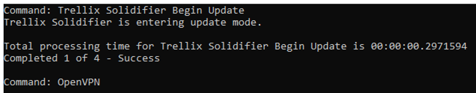
Step 2: Configure OpenVPN on the DxI 9000
- On the USB drive go to DxI 9000 OpenVPN Software Configuration\Configuration\OpenVPNClient\TCP
- Copy
Client-Config-TCP.ovpn to
C:\Program Files\OpenVPN\config on the instrument.
Note: Create the C:\Program Files\OpenVPN\config folder if it does not exist.
- Open Client-Config-TCP.ovpn in Notepad.
- In the file find
remote LIS_SERVER_IP_ADDRESS 1194 and type the IP address and port number on this line.
For example, if the IP address for the server is 10.100.23.54 and the server port number is 1194, type remote 10.100.23.54 1194 as shown in the illustration below.
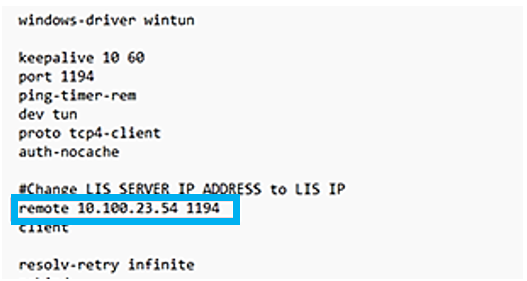
- Save and close Client-Config-TCP.ovpn
- Insert the USB drive that includes the certificate folders that you received from CCIACertificateSupport@beckman.com into a spare port on the DxI 9000.
- Copy the following four files from the client certificate folder to
C:\Program Files\OpenVPN\config on the DxI 9000 instrument.
- root-ca.crt
- Password_For_dxi90001.txt
- dxi9000client1.p12
- ta.key
- Go to C:\Program Files\OpenVPN\config
- Open
dxi9000client1.p12 to start the Certificate Import Wizard. The Welcome to the Certificate Import Wizard page will be displayed.
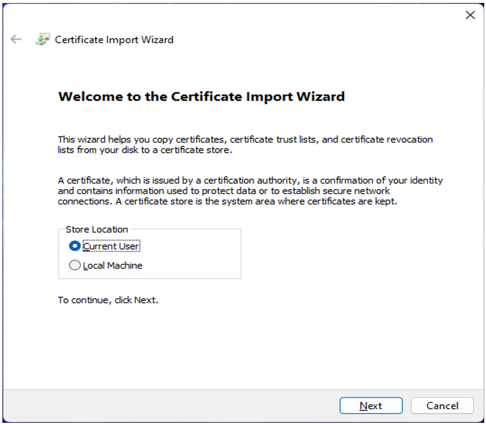
- Select Current User.
- Select
Next. The File to Import page will be displayed.
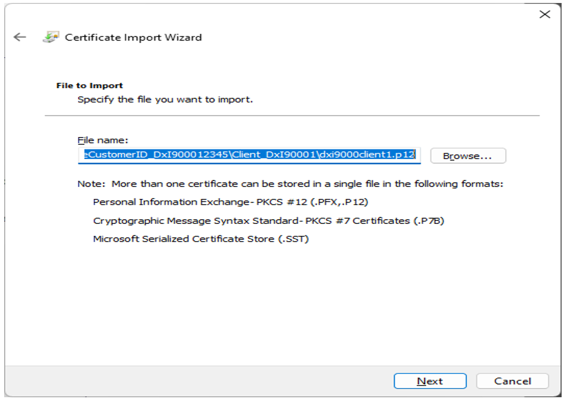
- On the File to Import page, be sure the File name: box includes the path to dxi9000client1.p12
- Select
Next. The Private key protection page will be displayed.
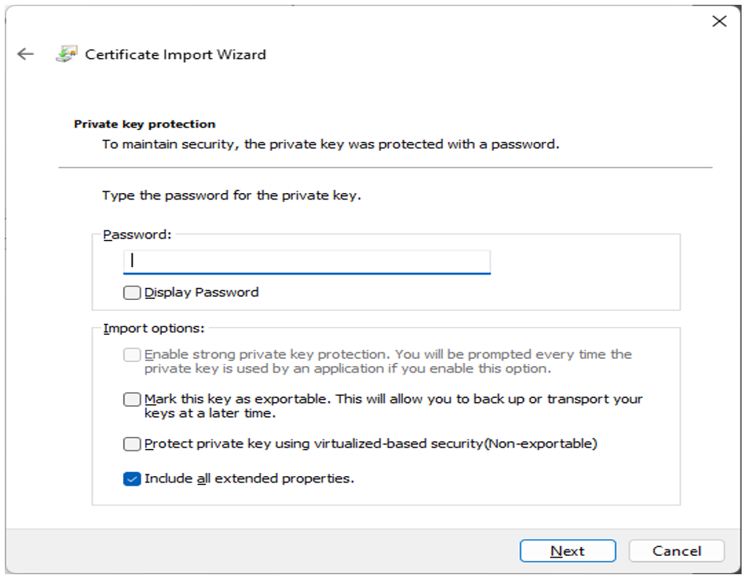
- Go to C:\Program Files\OpenVPN\config
- Open Password_For_dxi90001.txt in Notepad.
- Copy the password.
- Paste the password into the Password: box.
- Be sure Include all extended properties is the only option selected.
- Select
Next. The Certificate Store page will be displayed.
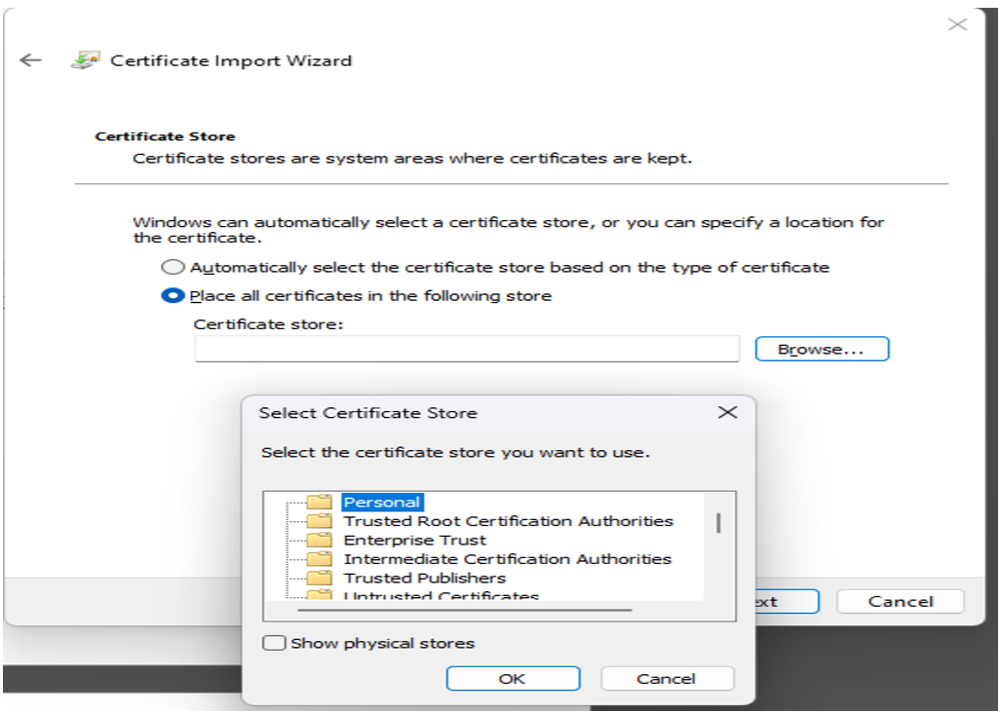
- Select Place all certificates in the following store.
- Select Browse... to open the Select Certificate Store dialog.
- Select Personal.
- Select OK.
- Select
Next. The Completing the Certificate Import Wizard page will be displayed.
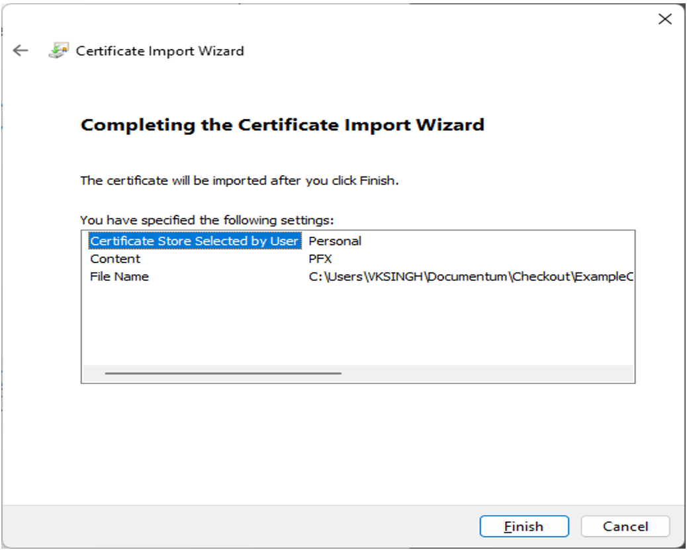
- Confirm the setting for Certificate Store Selected by User is Personal.
- Select
Finish. The Certificate Import Wizard dialog will be displayed.
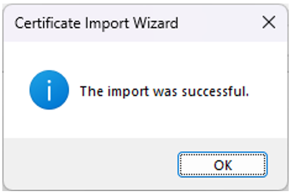
- Select OK.
- Sign out of the BeckmanAdmin account.
- Sign in to use the LabUser account.
- Repeat this procedure, Step 2: Configure OpenVPN on the DxI 9000, for the LabUser account.
Step 3: Update the Certificate Thumbprint and ta.key
- Sign in to use the BeckmanAdmin account. See Signing In to Use the BeckmanAdmin Account for more information.
- Press the Windows key, type cert, and select Manage user certificates to open the certmgr control panel.
- Go to
to display certificates.
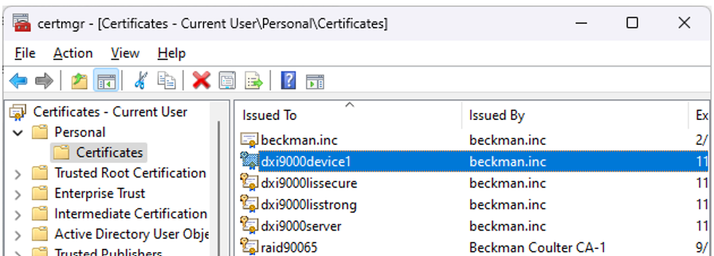
- Double-click dxi9000device1 to open the Certificate dialog.
- Select the Details tab.
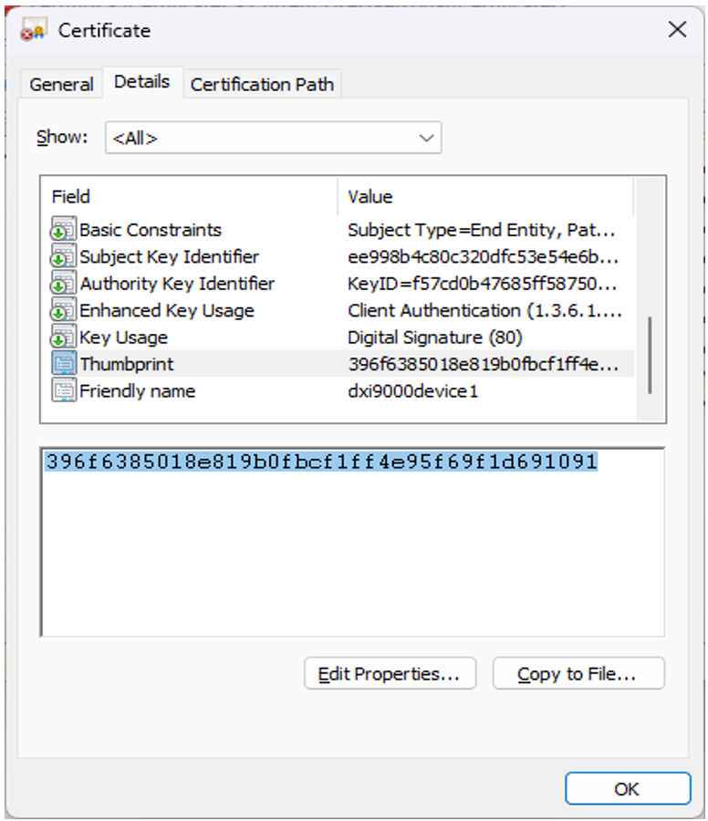
- Select Thumbprint to display the code.
- Select the code, right-click, and select Copy.
- Go to C:\Program Files\OpenVPN\config
- Select Client-Config-TCP.ovpn and select Edit in Notepad to open the file in Notepad.
- Find the line that begins with
cryptoapicert "THUMB:
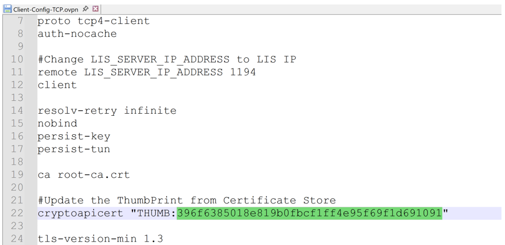
- Replace the code with the code you copied from the Certificate dialog. (Select the existing code in Notepad, right-click, and select Paste to paste in the new code.)
- Select File and select Save to save Client-Config-TCP.ovpn, but do not close the file.
- Go to C:\Program Files\OpenVPN\config
- Select
ta.key and select
Edit in Notepad to open the file in Notepad.
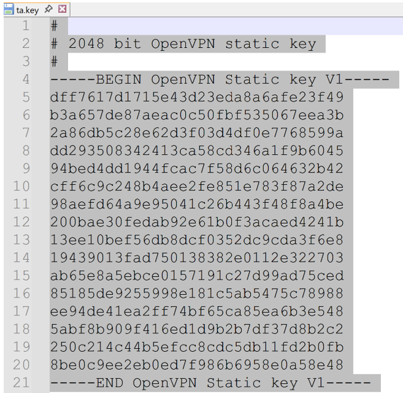
- Select all the text in the file, right-click, and select Copy.
- In
Client-Config-TCP.ovpn find the line that begins with
<tls-auth>.
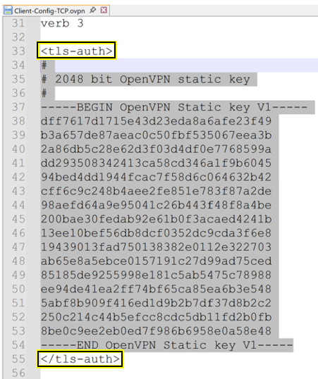
- In the lines after the first line that displays the <tls-auth> tag and before the second line that displays the <tls-auth> tag, replace the text with the text you copied from the ta.key file. (Select the existing text, right-click, and select Paste to paste in the new text.)
- Select File and select Save to save Client-Config-TCP.ovpn.
- Close the Client-Config-TCP.ovpn file, the ta.key file, and the certmgr control panel dialogs and windows.
Step 4: Confirm the OpenVPN Connection from the Client to the Server
- Press the
Windows key, type
OpenVPN GUI, and select
OpenVPN GUI. A new icon for OpenVPN will be displayed in the system tray on the Windows taskbar, illustrated below.
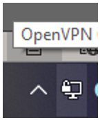
- Right-click the
OpenVPN icon in the system tray and select
Connect. The
OpenVPN icon icon in the system tray will change to
GREEN (Connected), illustrated below.
- Double click the
OpenVPN icon to open the Open VPN Connection window.
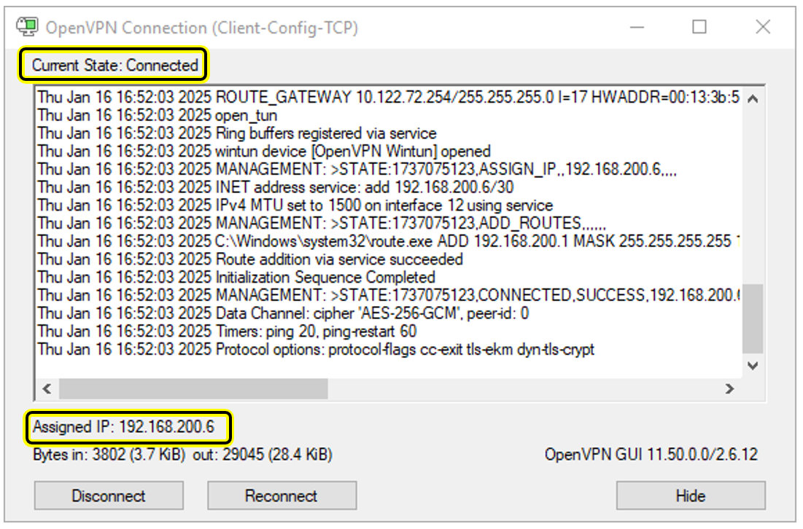
- Confirm that the Current State is Connected and that there is an IP address displayed for the Assigned IP. Close the window.
- Press the Windows key, type cmd, and select Command Prompt to open the Command Prompt window.
- Type ping XXX.XXX.XXX.X where XXX.XXX.XXX.X represents the IP address for the LIS.
- Press
Enter.
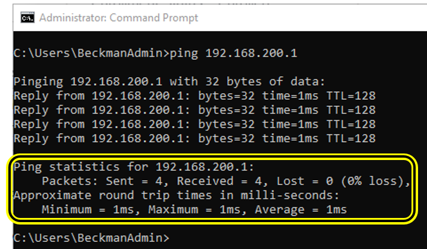
- Confirm that the ping statistics for the IP address include Packets: Sent = 4, Received = 4, Lost = 0 (0% loss).
- Close the window.
Step 5: Configure OpenVPN to Automatically Connect on System Startup
- Restart the PC. See Restarting the Console PC for more information.
- Sign in to use the BeckmanAdmin account. See Signing In to Use the BeckmanAdmin Account for more information.
- Press the Windows key and type regedit to show Registry Editor options in search box results.
- Select Run as administrator to open Registry Editor.
- Go to
HKEY_USERS and select the folder that ends with
1004.
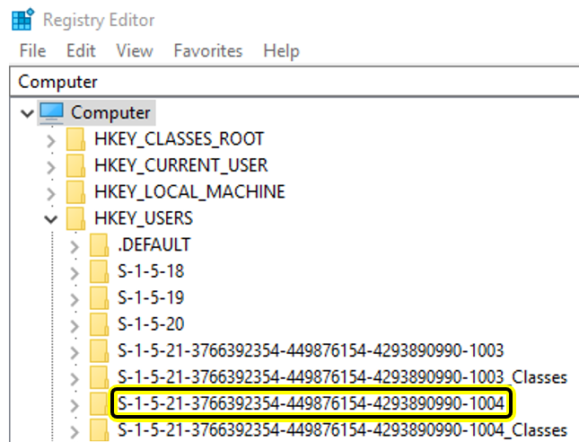
- In the folder that ends with
1004 go to
to display the registry key values.
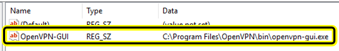
- Double-click
OPENVPN-GUI to open the Edit String dialog.
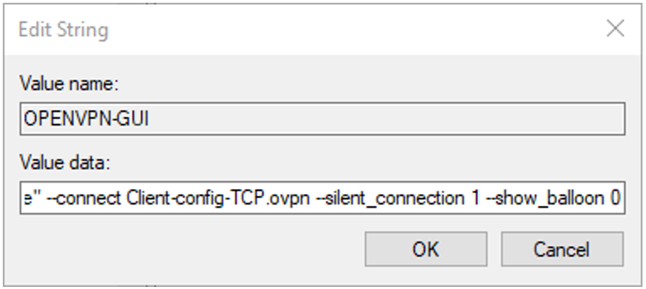
- Edit the text in the Value data: box to be "C:\Program Files\OpenVPN\bin\openvpn-gui.exe" --connect Client-config-TCP.ovpn --silent_connection 1 --show_balloon 0
- Select OK.
- Close Registry Editor.
Step 6: Delete OpenVPN Configuration Files
- Go to C:\Program Files\OpenVPN\config
- Delete the following files.
- dxI9000client1.p12
- Password_For_dxi90001.txt
- ta.key
Note: After you delete these files, the only remaining files in the folder should be Client-Config-TCP.ovpn and root-ca.crt.
Step 7: Configure LIS Communication Settings
- Open the Machine Control App.
- Open the Console App.
- In the Console App go to to open the System Configuration window.
- On the System Configuration page go to
.
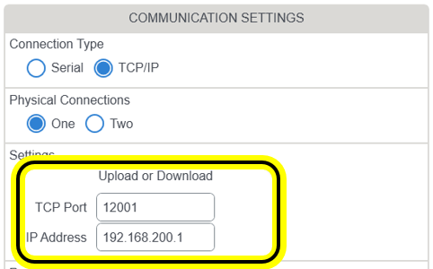
- Enter the TCP port and IP address for the LIS server.
- Go to System Configuration.
- Select Activate.
Step 8: Install OpenVPN on Remaining DxI 9000 Clients
Repeat Step 1: Install the OpenVPN Software onto the DxI 9000 through Step 7: Configure LIS Communication Settings for the remaining DxI 9000 clients.